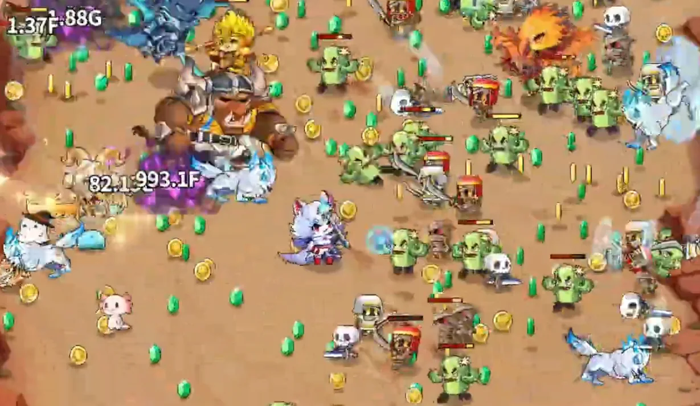

포트폴리오로
ZTO Games · 2024.08 – 2026.02 · Unity 클라이언트
픽셀소녀키우기
방치형 RPG · Android (Google Play) · 개발 8개월 + 라이브 4개월 · 프로그래머 2명
방치형 RPG를 처음 개발할 때부터 출시 뒤 라이브 4개월까지 맡았습니다. 프로그래머 2명 중 한 명으로 게임 기능의 약 절반을 구현했고, 출시 뒤 팀이 6명에서 4명으로 줄어든 상태로 라이브를 이어 가며 Google Play 배포까지 담당했습니다.



맡은 기능
- 성장 시스템: 마스터리·각성·단조. 마스터리 트리는 노드 위치를 데이터로 받아 그려, 기획이 배치를 바꿔도 코드를 고치지 않습니다.
- 스킬 40종 이상·투사체 20종 이상
- 레드닷(알림 표시) 시스템과 검수용 뷰어
- 시즌 이벤트 미니게임 4종: 공통 로직을 베이스 클래스로 묶고 게임별 규칙만 구현
- 길드 레이드 보스: 공격 패턴·페이즈 전환·전투 연출
- 뒤끝 서버 연동: 길드(가입·탈퇴·관리), 전체·길드 채팅
이 페이지의 사례 길드 랭킹레드닷
사례 1
길드 랭킹 화면의 서버 호출을 51회에서 최선 2회로
51 → 2
화면 한 번 열 때의 서버 호출 수 · 운영 중에는 대부분 3회 안쪽 · 최악이어도 51회
- 상황
-
길드 랭킹 화면을 열 때마다 서버 호출이 항상 51회 나갔습니다. 랭킹 조회 1회에 길드별 추가 조회 50회입니다.
개인 프로젝트에서 서버 비용을 따져 본 적이 있어 뒤끝 요금 기준을 확인해 보니, 용량이 아니라 호출 횟수마다 비용이 드는 구조였습니다. 직접 발견해 기획과 팀장에게 현상과 대체안을 공유하고 진행했습니다.
- 제약
-
- 길드 인원수와 엠블럼은 기획상 반드시 보여야 하는 정보였습니다.
- 랭킹 API는 등수와 길드 이름만 돌려줍니다.
- 길드 목록은 생성 순서대로 한 번에 최대 100개까지 받을 수 있습니다.
- 검토한 방법
-
표시 순위를 50위에서 30위로 줄이는 안을 기획팀에 물었지만, 51회가 31회가 될 뿐 같은 수준이라 접었습니다.
데이터 용량도 함께 계산했는데 몇십 KB 수준이라 문제가 되지 않았습니다.
- 선택과 이유
-
랭킹 포인트는 출석으로 쌓여서, 인원이 많고 오래된 길드가 기간에 비례해 유리한 구조였습니다. 실제 랭킹 데이터로도 상위권이 오래된 길드라는 점을 확인했습니다.
그래서 랭킹에 든 길드 중 가장 오래된 길드부터 생성 순서대로 한꺼번에 받고, 그 범위 밖의 길드만 따로 조회하도록 바꿨습니다.
- 결과
최선 2회, 실제 운영에서는 전체 길드 수가 많지 않아 대부분 3회 안쪽에서 끝났습니다.
- 한계
랭킹에 든 길드가 한 번에 받는 범위 밖에 많으면 최악 51회까지 갑니다. 개선 전과 같은 횟수라, 바꿔서 손해 보는 경우는 없습니다.
사례 2
레드닷을 생성 순서와 상관없이 동작하게
ID만 적으면 연결
레드닷을 추가할 때 부모·자식 관계만 적으면 되고, 생성 순서와 콘텐츠 잠금은 신경 쓰지 않습니다
- 이전 작품의 문제
-
픽셀용사키우기에서는 레드닷을 UI가 직접 켜거나 바로 위 부모만 켜는 방식이었습니다.
- QA 때마다 시나리오를 짜서 레드닷을 확인해야 했습니다.
- 상태를 UI가 들고 있어, 메인 화면 아이콘과 팝업 안의 레드닷을 따로 처리해야 했습니다.
- 레드닷을 켜려면 코드가 그 레드닷이 어디 있는지 알아야 했습니다.
- 제약
-
신작에는 상점·무기·스킬·던전·시즌패스처럼 화면이 만들어질 때 함께 생기는 레드닷이 많았습니다. 자식이 부모보다 먼저 만들어지면 연결이 끊겨 상위 메뉴에 알림이 올라가지 않았고, 생성 시점이 화면에 묶여 있어 순서를 정해 둘 수 없었습니다.
- 검토한 방법
-
처음에는 에디터로 트리를 만들어 순서를 맞추려 했습니다. 하지만 에디터 저장 시 순서가 어떻게 보장되는지 기준을 몰랐고, 에디터가 완성된 뒤 설계를 모르는 사람이 써도 문제가 없어야 했습니다. 그래서 순서에 기대지 않는 구조를 택했습니다.
- 선택과 이유
-
기존 코드는 가독성과 기능이 좋지 않아 새로 작성했습니다.
- 상태는 관리자가 ID 기준 데이터로만 들고, 화면의 레드닷은 켜진 것만 표시하도록 상태와 화면을 나눴습니다.
- 갱신은 이벤트나 그룹(장비·스킬 등) 단위로 관리자에 요청합니다.
- 부모가 아직 없으면 연결을 미뤘다가, 부모가 생길 때 잇습니다.
- 잠긴 콘텐츠에서 켜진 알림은 대기열에 두었다가 잠금이 풀릴 때 한꺼번에 적용합니다.
- 검수 도구
-
기획팀이 엑셀만으로는 레드닷 계층과 동작 여부를 검수하기 어려워해 전용 에디터를 제안하고 착수했습니다. 데이터 구조 설계까지 했지만, ID 중복 처리·저장 방식·연결 규칙 협의가 마무리되지 않았고 다른 핵심 기능에 우선순위가 밀려 편집 기능은 완성하지 못했습니다.
기획팀에게 실제로 필요했던 것은 검수였기 때문에 목적을 좁혀, 트리 계층과 현재 켜진 레드닷 상태를 보여 주는 뷰어로 완성했습니다.
- 결과
이후로는 레드닷을 추가할 때 부모·자식 ID 관계만 적으면 됩니다.
- 한계
데이터 구조가 처음부터 명확했다면, 연결을 미뤄 두는 방식 대신 생성하면서 바로 부모를 잇는 구조로 만들었을 것입니다.
코드: unity-portfolio / RedDotSystem
그 밖에 해결한 문제
- 마스터리 연타: 레벨업 버튼을 연타하면 레벨업마다 스탯을 다시 계산했습니다. 5회마다 한 번만 계산하도록 묶고, 연타가 멈추면 남은 횟수만큼 바로 계산해 화면 값이 어긋나지 않게 했습니다.
- 아트 공백: 아트 작업이 비어 있던 시기에 길드 레이드 보스의 스킬 애니메이션과 이펙트를 직접 만들었습니다.